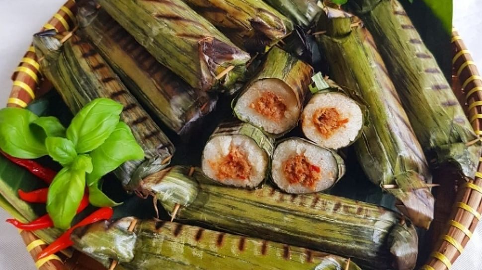

Lalampa
Lalampa adalah makanan khas Manado berupa nasi ketan berisi ikan cakalang atau tongkol, kemudian dibungkus daun pisang dan dibakar hingga harum.
Bahan utama:
- 500 gram beras ketan
- Santan secukupnya (untuk memasak ketan)
- Daun pisang untuk membungkus
Isian:
- 200 gram ikan cakalang asap / tongkol (disuwir)
- 3 siung bawang merah (iris)
- 2 siung bawang putih (cincang)
- 5 cabai merah (haluskan)
- 3 cabai rawit (opsional)
- Garam secukupnya
- Minyak untuk menumis
Cara Membuat:
-
Masak ketan
Cuci beras ketan, kukus setengah matang, lalu campur santan dan kukus kembali hingga matang. -
Buat isian
Tumis bawang merah, bawang putih, dan cabai hingga harum. Masukkan ikan cakalang suwir, tambahkan garam, lalu aduk rata. -
Bungkus lalampa
Ambil ketan, pipihkan di daun pisang, isi tumisan ikan, lalu gulung atau lipat memanjang. -
Bakar
Panggang di atas bara api atau teflon hingga daun pisang harum dan sedikit gosong.